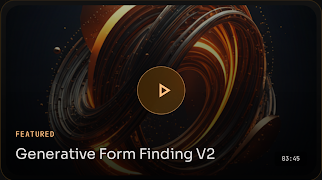
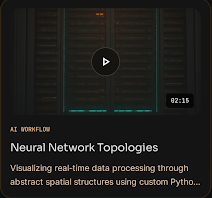
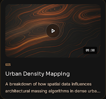
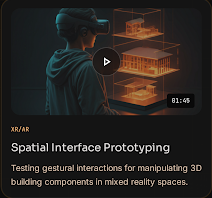

Video Highlights
Digital Ideas In Motion
A curated archive of process demonstrations, workflow experiments, and kinetic architectural models. Translating complex technical concepts into accessible visual narratives.
Watch LatestRecent Explorations
View Archive
Neural Network Topologies
Visualizing real-time data processing through abstract spatial structures using custom Python workflows.

Urban Density Mapping
A breakdown of how spatial data influences architectural massing algorithms in dense urban environments.

Spatial Interface Prototyping
Testing gestural interactions for manipulating 3D building components in mixed reality spaces.
Want to See an Idea Become a Demo?
Whether it's a complex system architecture or a new digital product concept, visual narrative clarifies intent.